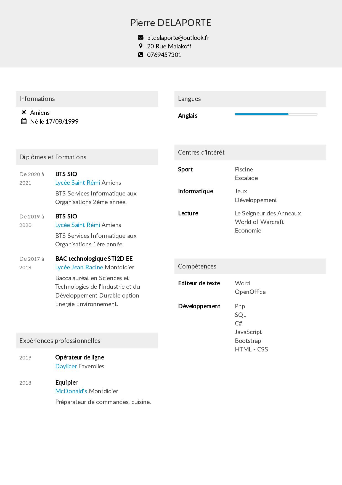

Ville : Amiens Adresse : 20 Rue Malakoff Téléphone : 07 69 45 73 01
Je suis titulaire d'un BAC STI2D en option EE !
Je suis maintenant en BTS SIO et souhaite choisir l'option SLAM et voilà mon portfolio fait spécialement pour l'année 2019-2020.
Experience

BTS SIO
Développeur
Actuellement en BTS SIO afin de devenir développeur web.
2019-2021
Compétences
Centre d'intérêt
Je suis un fan de jeux vidéos, j'aime aussi les mangas
ainsi que l'univers de l'écrivain Tolkien qui a écris Le Seigneur Des Anneaux.
L'informatique est un passe temps que j'apprécie beaucoup aussi, c'est pourquoi je me suis lancé dans un BTS SIO.
En plus de l'informatique, le dessin est aussi un autre de mes passes temps !